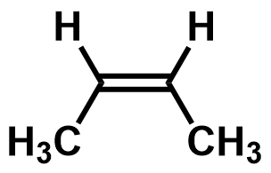

| cis-but-2-ene | trans-but-2-ene |
|---|---|
|  | |
| From the space-filling models, it can be seen that the two methyl groups in cis-but-2-ene are already touching each other, resulting in steric repulsion between the two methyl groups, making it less stable than trans-but-2-ene. | |